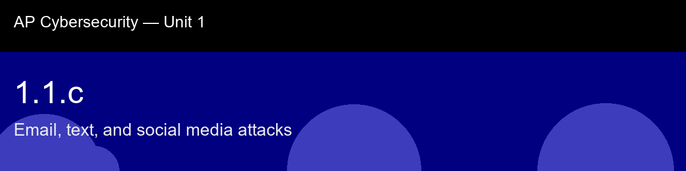

1.1.c, Email, text, and social media attacks
Before class today. The tactics covered in 1.1.a (urgency, authority, scarcity, intimidation) and the link and file
indicators from 1.1.b are the content of social-engineering attacks. This skill examines the
delivery channels, the pipes through which that content reaches victims, and why each channel
has its own set of exploitable trust assumptions.
The intuition to hold onto: A useful way to hold email, SMS, and social media together in your head: each channel is effective for a different reason, not the same reason wearing a different costume. Email works because it looks institutional. SMS works because it feels personal and urgent, a text landing on the phone in your pocket carries a different weight than an email in a crowded inbox. Social media works because it borrows your existing trust in a specific person or brand you already follow. An attacker who has been rebuffed on one channel doesn't give up; they just switch to a channel where your guard is calibrated differently.
A myth worth busting before we start: "I can always tell a phishing email by its grammar." → Spear phishing and AI-generated phishing (1.4.b) can be grammatically perfect and contextually accurate. Grammar is an unreliable signal.
Today's goal: Identify the distinguishing features of phishing attacks delivered over email, SMS, and social media, and explain how channel-specific trust cues make each delivery method effective.
Handout: pre-lecture-handout.docx.

## 1.1.c, Email, text, and social media attacks
**Before class today.** The tactics covered in 1.1.a (urgency, authority, scarcity, intimidation) and the link and file
indicators from 1.1.b are the content of social-engineering attacks. This skill examines the
delivery channels, the pipes through which that content reaches victims, and why each channel
has its own set of exploitable trust assumptions.
**The intuition to hold onto:** A useful way to hold email, SMS, and social media together in your head: each channel is effective for a *different* reason, not the same reason wearing a different costume. Email works because it looks institutional. SMS works because it feels personal and urgent, a text landing on the phone in your pocket carries a different weight than an email in a crowded inbox. Social media works because it borrows your existing trust in a specific person or brand you already follow. An attacker who has been rebuffed on one channel doesn't give up; they just switch to a channel where your guard is calibrated differently.
**A myth worth busting before we start:** "I can always tell a phishing email by its grammar." → Spear phishing and AI-generated phishing (1.4.b) can be grammatically perfect and contextually accurate. Grammar is an unreliable signal.
**Today's goal:** Identify the distinguishing features of phishing attacks delivered over email, SMS, and social media, and explain how channel-specific trust cues make each delivery method effective.
Handout: `pre-lecture-handout.docx`.